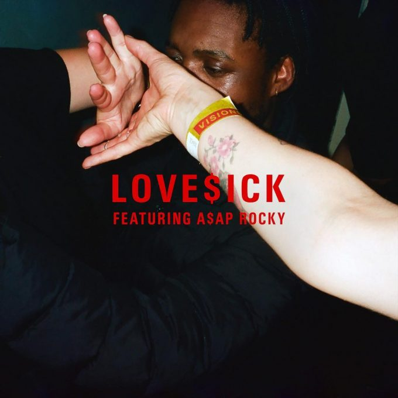
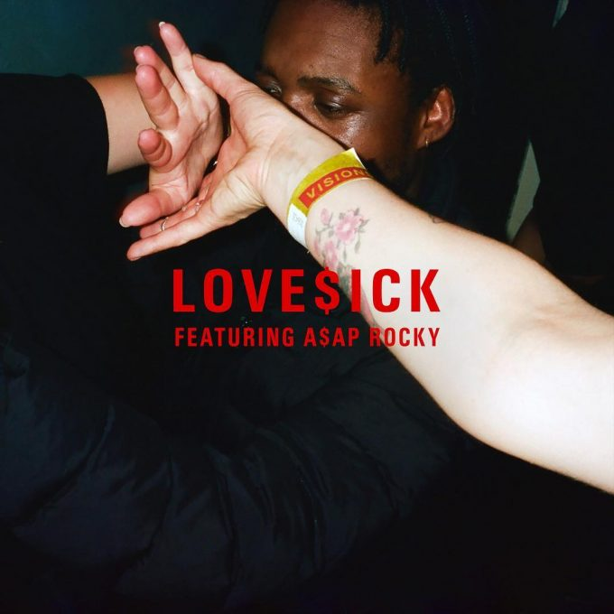

Nice to meet you, I'm Léa
Passionated by the HR field, music lover, cinema addict, cat person
When I want to escape, my go-to is Le blog de Bruno Maltor
HR apprentice
As an HR apprentice, I am very curious about the impact of our world's evolutions on the sphere of human resources. The HR digital transformation, the development of AI (Artificial Intelligence), the emergence of new ways of organising work such as teleworking or coworking, and the quality of life at work are all subjects that passionate me.
Music lover
As many people do, I have a strong bond with music. Its power on our emotions has a way to fascinate me. It's like a cure but for the soul. I love Drake, The Weeknd, Frank Ocean, Childish Gambino among others. Here are some of the tracks that move me :

 

Cinema addict
Like music or travelling, I see cinema as a way to escape. The last film I saw was 1917 by Sam Mendes. I highly recommend it.
Cat person
I love animals, especially cats ! Their purring is a soothing remedy.